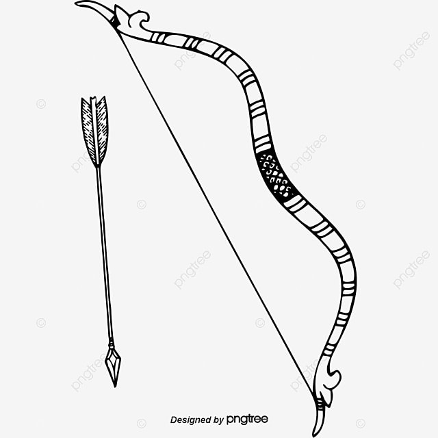

Portifólio

Marjorie Maria
Das Neves Gomes
Programadora
Projetos

PizzaNostra
Projeto de uma pizzaria fictícia, produzido em sala.

Histórias do folclore capixaba
Projeto sobre o folclore capixaba
Raízes que Gritam
Projeto sobre o dia dos povos indígenas
Sobre mim
Marjorie Maria das Neves Gomes
Técnica em Informática para Internet no SENAC, com formação complementar em informática básica e inglês.
Tenho interesse em desenvolvimento web e estou constantemente buscando aprender mais sobre tecnologia, design e usabilidade.
Sou apaixonada por aprender, explorar novas ideias e transformar conhecimento em prática. Ao longo da minha jornada,
também desenvolvi habilidades manuais e criativas através de hobbies como tocar violão e violino, escrever, fazer
crochê, e criar peças com massa de biscuit e EVA. Essas atividades me ajudam a exercitar a paciência, o foco e a atenção
aos detalhes — qualidades que também levo para meus projetos de tecnologia.
Minha abordagem é prática, curiosa e voltada para soluções que realmente funcionem. Gosto de aprender fazendo, enfrentar
desafios e colaborar com pessoas que compartilham ideias e inovação.
Conhecimentos
- Pacote Office – Word, Excel, PowerPoint (nível intermediário).
- HTML5 & CSS3 – Criação de páginas web com estrutura e estilo.
- JavaScript (básico) – Compreensão de lógica de programação e interatividade.
- Git & GitHub – Controle de versão e hospedagem de código.
- Canva – Criação de materiais visuais para redes sociais e apresentações.
- MySQL (básico) – Criação e gerenciamento de bancos de dados relacionais.
- PHP (básico) – Desenvolvimento de páginas dinâmicas com back-end.
Tecnologias e Ferramentas
- Inglês Básico
Idiomas
- Facilidade com trabalhos manuais e visuais
- Criatividade e senso estético
- Boa comunicação e vontade de aprender
Habilidades Pessoais
- Inglês técnico para tecnologia
- Python – Primeiros passos na linguagem e automação simples
- Lógica de programação avançada
Em aprendizado
Contatos
Para entrar em contado comigo: